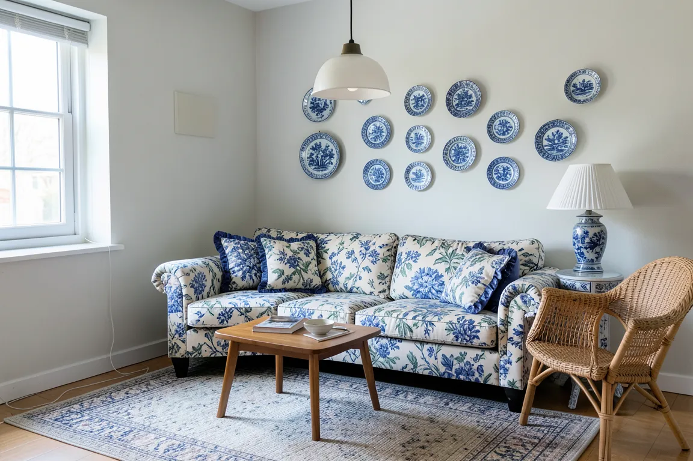

интерьер · 2019–present · также: Бабушкин шик, Новая традиция, Стиль грандмиллениал
Молодое поколение возвращает комнаты своих бабушек и дедушек. Ситец, рюши, гобелен, столы с юбками, плетёная мебель и сине-белый фарфор возвращаются со свежей лёгкой палитрой и чувством юмора; узор встречает узор, а унаследованные вещи встречают новые.

Главная идея
Уют и память побеждают холодную пустую комнату: унаследованные, красивые и узорчатые вещи делают дом.
Принципы дизайна
Смешивайте 3–5 узоров в одной комнате: цветочный, полосу или клетку и мелкий принт, в одном цветовом семействе.
Держите стены светлыми и свежими или обклейте их мелкими цветочными обоями.
Берите мягкие традиционные формы: столы с юбками, плиссированные абажуры, рюшевые подушки и фестончатые края.
Смешивайте унаследованные или винтажные вещи с несколькими новыми.
Показывайте коллекции: сине-белый фарфор, тарелки на стене, подушки с гобеленовой вышивкой.
Держите расстановку традиционной и симметричной относительно очага или кровати, затем ломайте её одной остроумной вещью.